I've started to be one of the UIS Canvas Champions, which provides guidance of a variety of Canvas designs and organizational options. All my Canvas course designs are responsive, which makes contents have a nice appearance and user friendly layouts on all electronic devices, such as smart cell phones, tablets, laptops, desktop computers, and on the “Canvas App.” Canvas course designs may contain 4 essentials: (1) Home Page, (2) Module Structure, (3) Content Pages, and (4) Course Information Pages.
The Canvas “Home” page is the first page students land the courses. There are several options including (a) Links to a ‘Start Here’ page, (b) Syllabus, (c) Course Modules, and so on. I have applied 4 different ways to create a Canvas Home page using advanced HTML coding, CSS, and other web design related techniques.
A Twitter Widget is embedded into Course Home Page. An actual Twitter embedded coding is saved as an Html file that I upload to the “Files” and then iframe in a Page. I use Twitter primarily to find resources about research articles and trends to share with my research mentees.
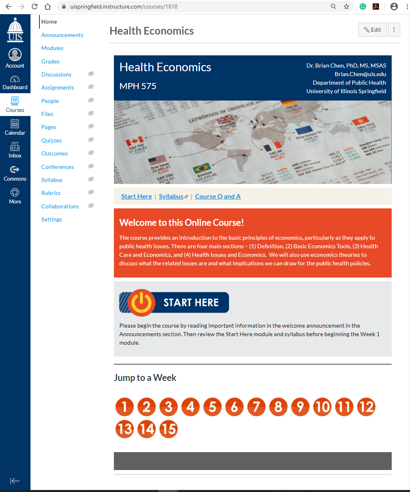
An example with a 'Start Here' button and numbered links of weekly materials. A ‘Start Here’ button and links (in the form of button images) to the materials in all weeks are designed to show on the homepage. Quality Matters metrics recommend a ‘Start Here’ indication for new students to the course. The numbered button links can lead to the specific module on the ‘Modules’ page. Hovering over the button reveals the title or lesson name.
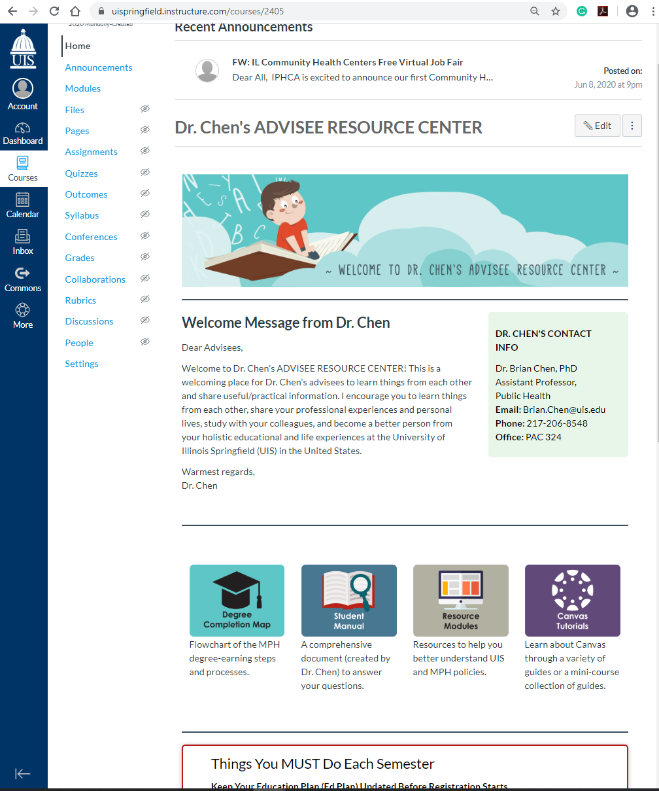
An example of a Canvas home page with branching navigations. I have created an interactive home page with branching navigation, contact information, and messages. My advisees can navigate all the important items from that one page just by clicking on the image buttons (e.g., Degree Completion Map, Student Manual, Resource Modules, and Canvas Tutorials) on the home page.
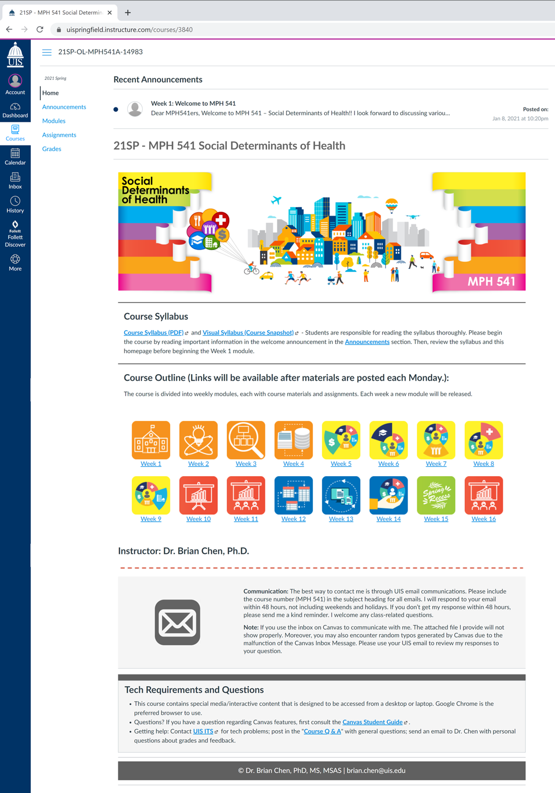
This homepage is designed with the integration of aesthetics and module-based representations. The customized images inserted in module links match the course’s structure smoothly and enhance the cohesion among weekly modules.
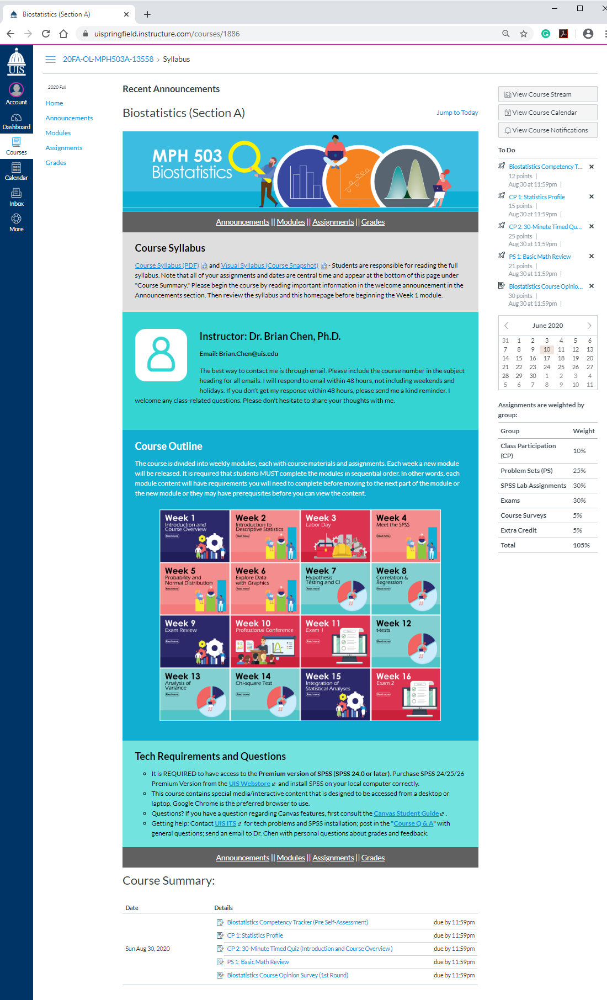
The syllabus is designed as the Canvas homepage with grid menus. Each mini card leads to the specific week on the Modules page. The syllabus page includes a downloadable syllabus, my contact information, course outlines, and technical support. The sidebar section displays information about course events and grading. Finally, all assignments appear at the bottom of this syllabus page under Course Summary.
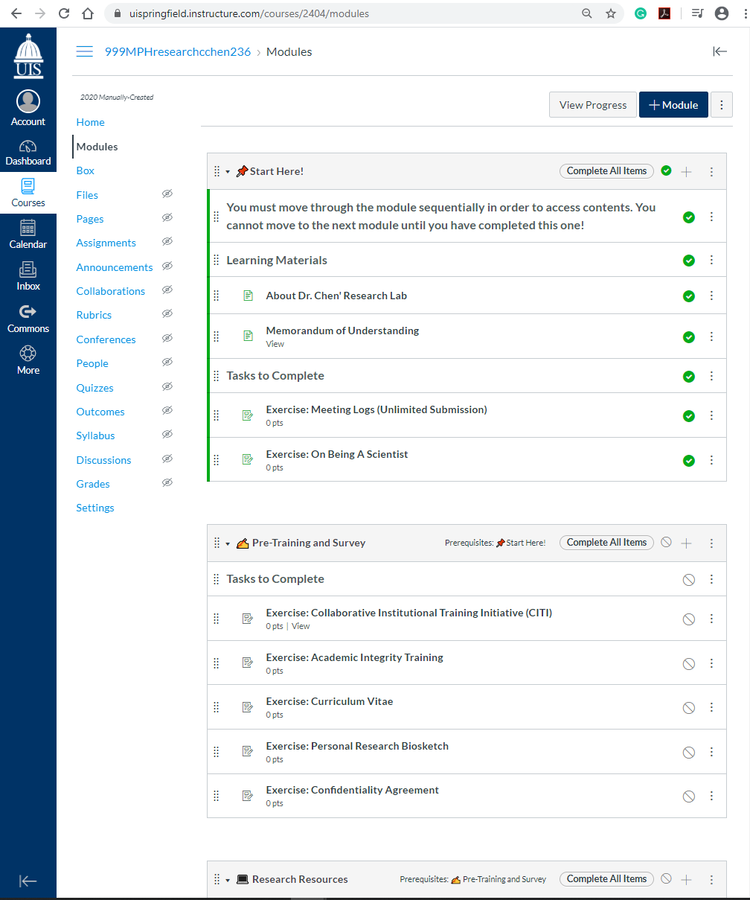
The structure of Canvas ‘Modules’ can serve as a course map. Clear and concise naming, location, and structure are important elements to students being able to understand and work through the courses. Modules organize the course content in a linear progression by weeks or topics.The screenshot shows an example of a Module that was set up based on sections of different purposes.
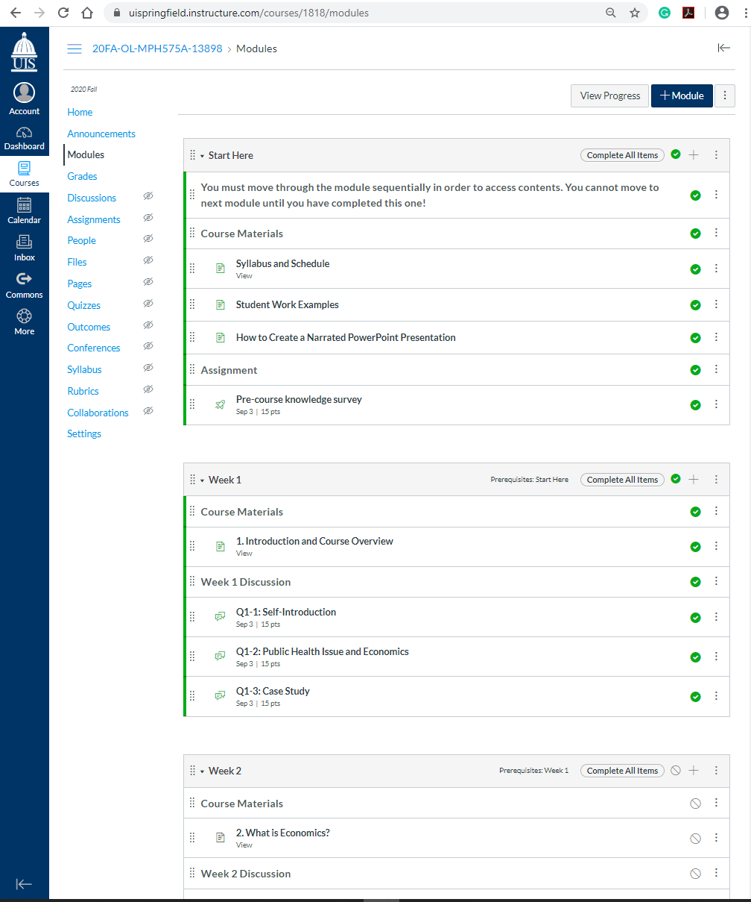
A module may contain pages (learning objectives, learning activities) and assessments (quizzes, assignments, discussions). Proper use of text header, indentation, and copy-paste characters can help students locate what they need and focus on a specific section of the module. The screenshot shows an example of a Module that was set up based on weekly materials.
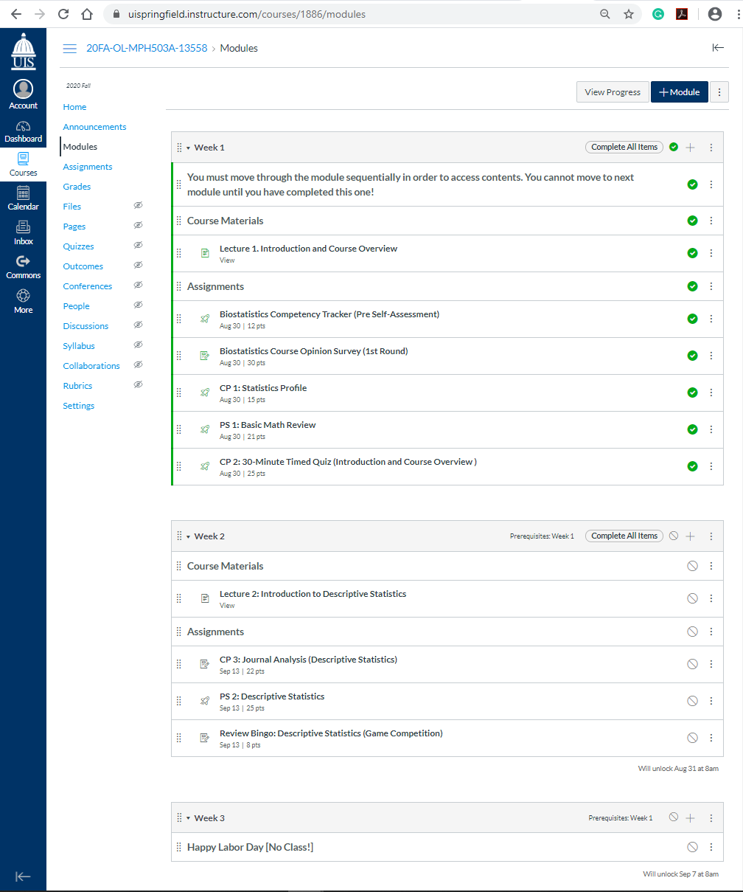
The screenshot illustrates an example of a Module that was set up based on week.
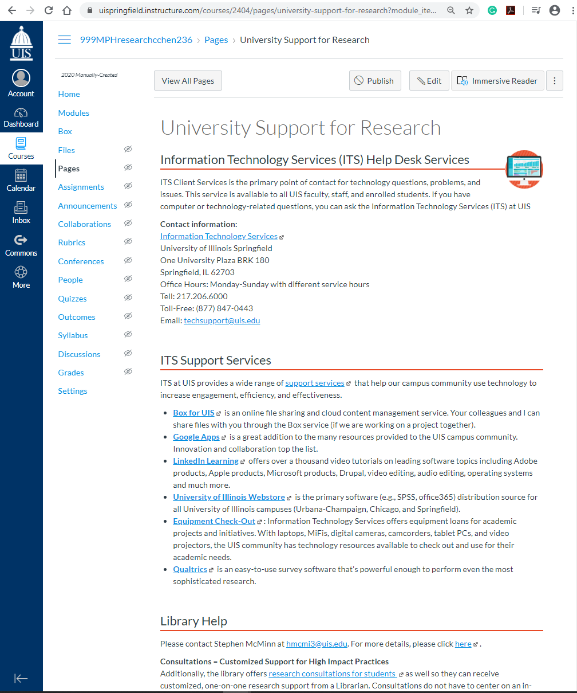
Canvas ‘Pages’ may contain videos, texts, and links to files and other class materials. Pages can be linked to other pages as well. Resource Page that contains links to different unversity resources for research.
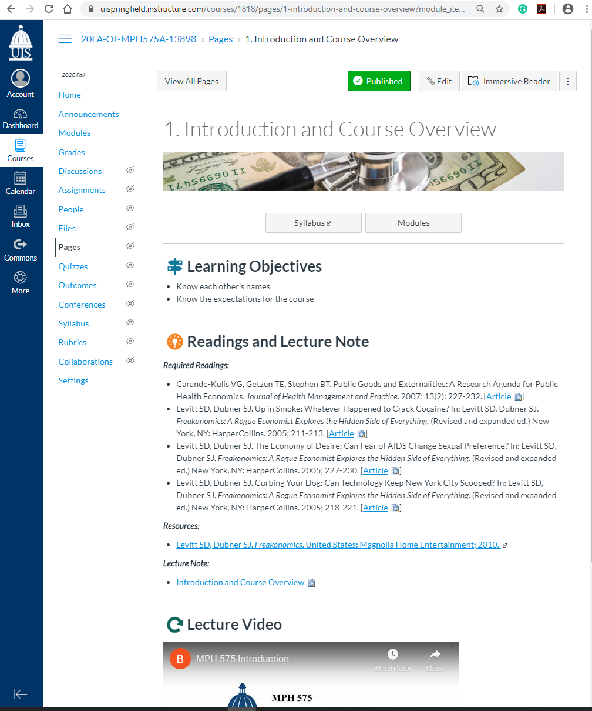
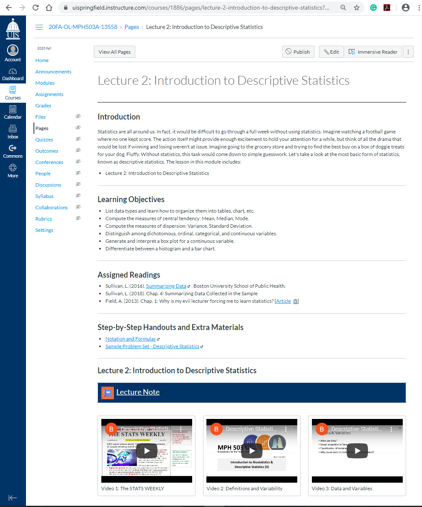
‘Rich Content Editor’ permits to use customized CSS and advanced HTML coding to create and embed contents.Each week, the Weekly 'Page' includes rich media and can be linked to other pages, assignments, discussions, and other course activities in Canvas.
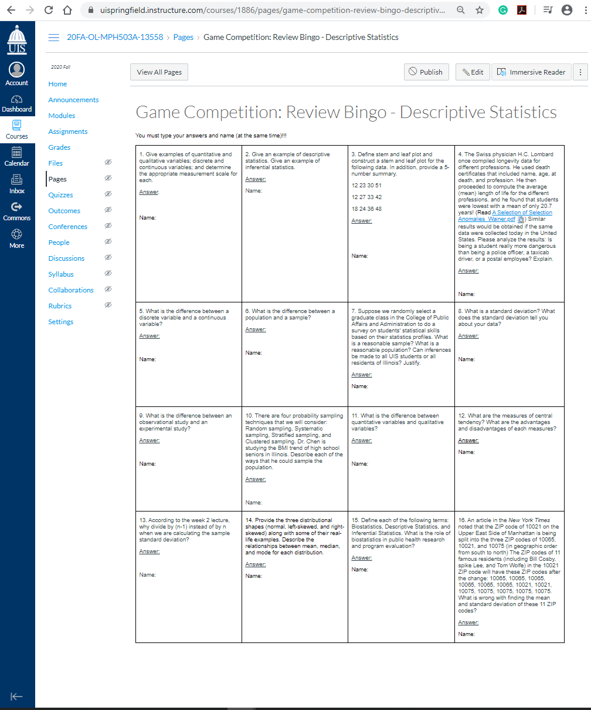
Content page can be used as a collaboration tool for course or group wikis where only users with assigned permissions can have access. Canvas can keep the entire history of the page to account for updates, revisions, and changes over time. Content Wiki - A wiki that can be a collaborative tool that allows students to create web contents.
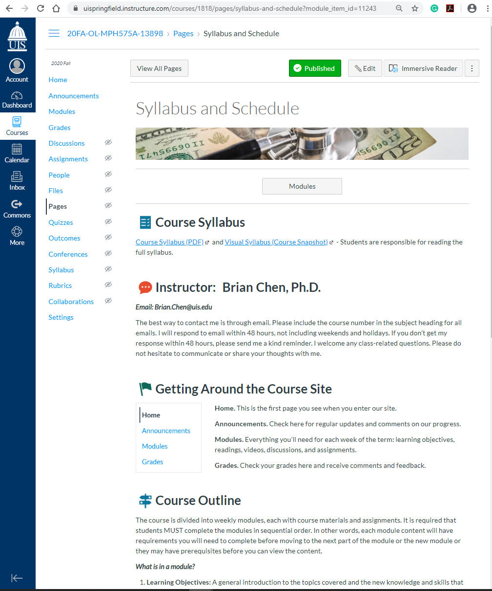
A "Start Here" page or syllabus page could be designed to include the ‘must-know’ information for students. Start Here Page designed to serve as alternative form of a syllabus. The first item in the first module includes the need to know information for students.
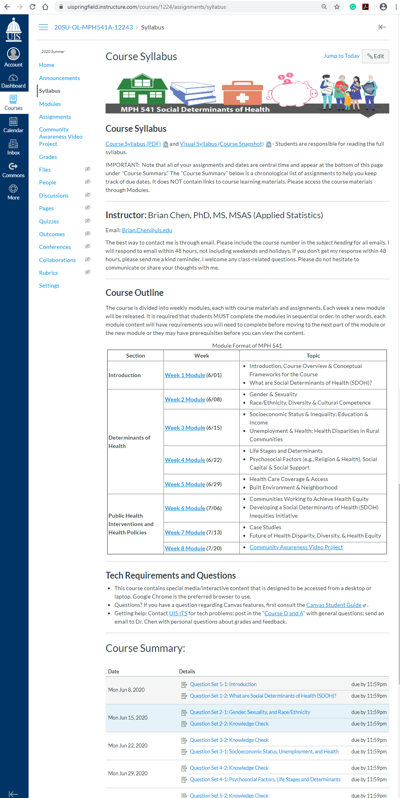
Syllabus Page displayed the instructor information, course description, course objectives and grading scheme. This approach can display the information about the teacher (e.g., a video with a quick introduction to the course, tips on how to prepare for the course, university resources, and technical support available for students.